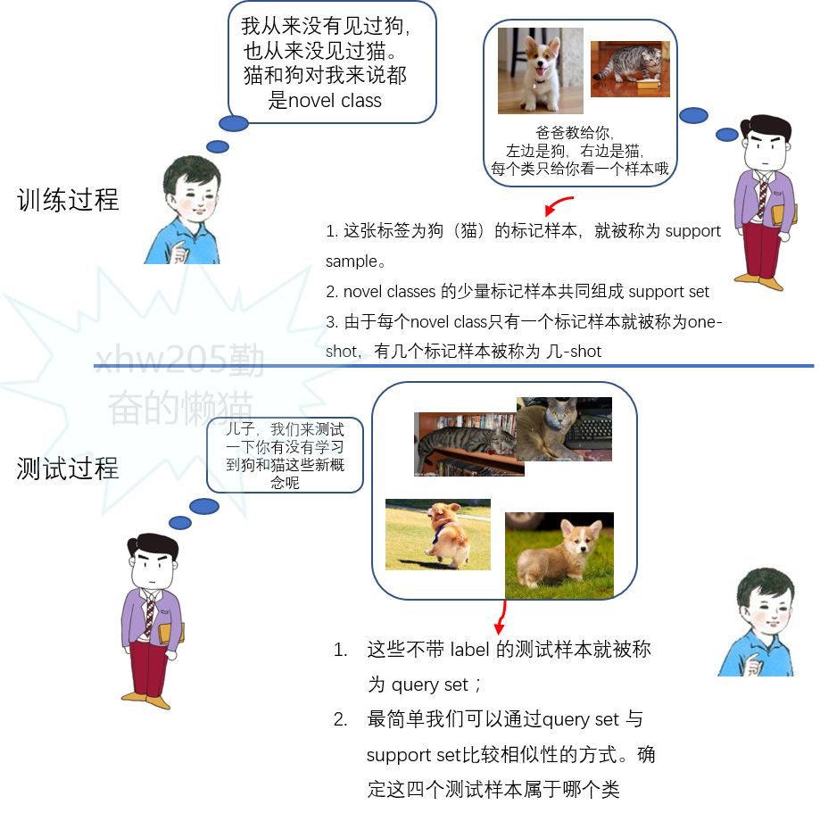
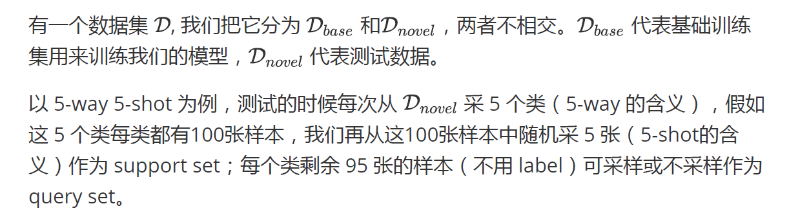

什么是小样本学习
包括One-shot Learning 、Zero-shot Learning、Few-shot Learning。本文主要针对one-shot/few-shot
Zero-shot： 训练样本里没有这个类别的样本，但是如果我们可以学到一个牛逼的映射，这个映射好到我们即使在训练的时候没看到这个类，但是我们在遇到的时候依然能通过这个映射得到这个新类的特征。也即：训练集中没有出现过的类别，能自动创造出相应的映射。
One-shot/Few-shot：类别下训练样本只有一个或者很少，我们依然可以进行分类。比如我们可以在一个更大的数据集上或者利用knowledge graph、domain-knowledge 等方法，学到一个一般化的映射，也就是学习一个映射，然后再到小数据集上进行更新升级映射。


方法
数据增强
学习数据增强的方式，通过少量可用的样本生成更多的样本
元学习 (Meta Learning) (主要关注)
利用大量跟目标任务相似的任务（或者历史任务）来学习一个元学习器 (meta-learner)，然后作用到目标任务上获得一个不错的模型初值，从而能够仅利用少量目标任务的数据对模型进行快速适配。
- 度量学习 (Metric Learning)
度量学习的大致想法是学习一个强大的、具有良好迁移能力的特征提取器 (feature extractor) 来直接应用到目标任务上。这样，通过一个少参或者无参的分类器（比如nearest neighbour）就可以做小样本分类任务了。
核心思想：学习一个 embedding 函数，将输入空间（例如图片）映射到一个新的嵌入空间，在嵌入空间中有一个相似性度量来区分不同类。我们的先验知识就是这个 embedding 函数，在遇到新的 task 的时候，只将需要分类的样本点用这个 embedding 函数映射到嵌入空间里面，使用相似性度量比较进行分类。
基于语义的方法 (TODO)
这类方法受到了零样本学习（zero-shot learning）的启发，其中分类任务的完成仅仅基于类别的名称、文本描述或属性。当视觉信息稀缺时，这些额外的语义信息也可能很有用。
参考资料
[小样本学习总结]
[few-shot learning是什么]
[与模型无关的元学习，UC Berkeley提出一种可推广到各类任务的元学习方法]
[2019 回顾与 2020 展望：小样本学习]
[Few-shot learning（少样本学习）和 Meta-learning（元学习）概述]
[从 CVPR 2019 一览小样本学习研究进展]
论文笔记
Dynamic Few-Shot Visual Learning without Forgetting (主要方法:度量学习)
https://arxiv.org/pdf/1804.09458.pdf
ConvNet-based recognition model
一个特征提取器 + 分类器组成的模型。
特征提取机：从输入图片中提取出$d$维的特征向量$z$
分类器：输入$z$，输出$K^{*}$维向量，向量内容为关于$K^{*}$类中各类的分类概率分$p$。
创新点：使用基于余弦相似度的计算原始分类分数（效果：在计算概率输出时base与novel的分类分数不会出现量级差距）。
Few-shot classification weight generator
使用meta-learning中度量学习方法，输入novel类中训练图片的特征向量$Z$，与base类的分类权重向量$W_{base}$，通过这两个输出，得到一个对于novel类的分类权重向量$w^{\prime}$。
使用的方法：1、平均权重向量与一个可学习的权重向量相乘得到$w^{\prime}_{avg}$；2、通过base类的权重引入注意力机制（一个cosine similarity function跟一个softmax），得到对应于base类权重的注意力分类向量$w^{\prime}_{att}$，乘上另一个可学习的权重向量。最后$w^{\prime}_{avg}+w^{\prime}_{att}$得到最终的分类向量$w^{\prime}$。
训练方法
分两步训练，先训练recognition model，之后固定model中特征提取器的权重，继续训练分类器和weight generator。
因此，并不是端到端的，两个步骤需要先后进行。